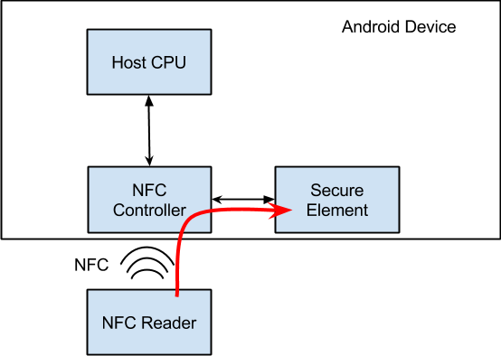
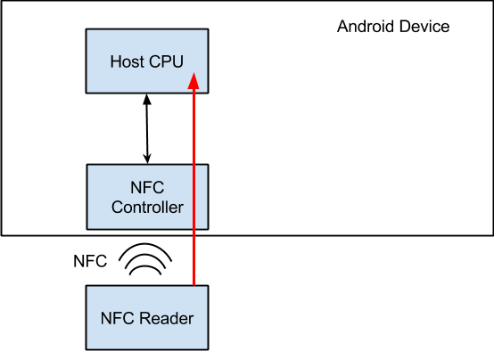
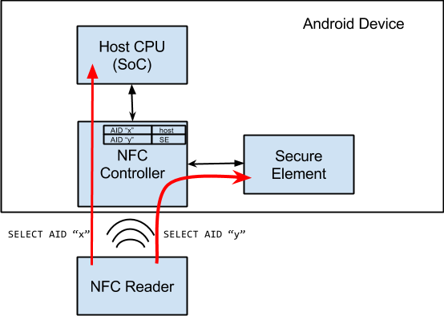

In this document
- Card Emulation with a Secure Element
- Host-based Card Emulation
- Supported NFC Cards and Protocols
- HCE Services
- Implementing an HCE Service
- AID Conflict Resolution
- Payment Applications
- Screen Off and Lock-screen Behavior
- Coexistence with Secure Element Cards
- HCE and Security
- Protocol parameters and details
Many Android-powered devices that offer NFC functionality already support NFC card emulation. In most cases, the card is emulated by a separate chip in the device, called a secure element. Many SIM cards provided by wireless carriers also contain a secure element.
Android 4.4 introduces an additional method of card emulation that does not involve a secure element, called host-based card emulation. This allows any Android application to emulate a card and talk directly to the NFC reader. This document describes how host-based card emulation (HCE) works on Android and how you can develop an app that emulates an NFC card using this technique.
Card Emulation with a Secure Element
When NFC card emulation is provided using a secure element, the card to be emulated is provisioned into the secure element on the device through an Android application. Then, when the user holds the device over an NFC terminal, the NFC controller in the device routes all data from the reader directly to the secure element. Figure 1 illustrates this concept.
Figure 1. NFC card emulation with a secure element.
The secure element itself performs the communication with the NFC terminal, and no Android application is involved in the transaction at all. After the transaction is complete, an Android application can query the secure element directly for the transaction status and notify the user.
Host-based Card Emulation
When an NFC card is emulated using host-based card emulation, the data is routed to the host CPU on which Android applications are running directly, instead of routing the NFC protocol frames to a secure element. Figure 2 illustrates how host-based card emulation works.
Figure 2. NFC card emulation with a secure element.
Supported NFC Cards and Protocols
Figure 3. Android's HCE protocol stack.
The NFC standards offer support for many different protocols, and there are different types of cards that can be emulated.
Android 4.4 supports several protocols that are common in the
market today. Many existing contactless cards are already based on these
protocols, such as contactless payment cards. These protocols are also
supported by many NFC readers in the market today, including Android NFC
devices functioning as readers themselves (see the IsoDep class).
This allows you to build and deploy an end-to-end NFC solution
around HCE using only Android-powered devices.
Specifically, Android 4.4 supports emulating cards that are based on the NFC-Forum ISO-DEP specification (based on ISO/IEC 14443-4) and process Application Protocol Data Units (APDUs) as defined in the ISO/IEC 7816-4 specification. Android mandates emulating ISO-DEP only on top of the Nfc-A (ISO/IEC 14443-3 Type A) technology. Support for Nfc-B (ISO/IEC 14443-4 Type B) technology is optional. The layering of all these specifications is shown in the figure 3.
HCE Services
The HCE architecture in Android is based around Android Service components
(known as "HCE services").
One of the key advantages of a service is that it can run in the background without
any user interface. This is a natural fit for many HCE applications like loyalty or transit cards,
with which the user shouldn't need to launch the app to use it.
Instead, tapping the device against the NFC reader starts the correct service (if not already
running) and executes the transaction in the background. Of course, you are free
to launch additional UI (such as user notifications) from your service if that makes
sense.
Service selection
When the user taps a device to an NFC reader, the Android system needs to know which HCE service the NFC reader actually wants to talk to. This is where the ISO/IEC 7816-4 specification comes in: it defines a way to select applications, centered around an Application ID (AID). An AID consists of up to 16 bytes. If you are emulating cards for an existing NFC reader infrastructure, the AIDs that those readers are looking for are typically well-known and publicly registered (for example, the AIDs of payment networks such as Visa and MasterCard).
If you want to deploy new reader infrastructure for your own application, you will need to register your own AID(s). The registration procedure for AIDs is defined in the ISO/IEC 7816-5 specification. Google recommends registering an AID as per 7816-5 if you are deploying a HCE application for Android, as it will avoid collisions with other applications.
AID groups
In some cases, an HCE service may need to register multiple AIDs to implement a certain application, and it needs to be sure that it is the default handler for all of these AIDs (as opposed to some AIDs in the group going to another service).
An AID group is a list of AIDs that should be considered as belonging together by the OS. For all AIDs in an AID group, Android guarantees one of the following:
- All AIDs in the group are routed to this HCE service
- No AIDs in the group are routed to this HCE service (for example, because the user preferred another service which requested one or more AIDs in your group as well)
In other words, there is no in-between state, where some AIDs in the group can be routed to one HCE service, and some to another.
AID groups and categories
Each AID group can be associated with a category. This allows Android to group HCE services together by category, and that in turn allows the user to set defaults at the category level instead of the AID level. In general, avoid mentioning AIDs in any user-facing parts of your application: they do not mean anything to the average user.
Android 4.4 supports two categories: CATEGORY_PAYMENT (covering payment
apps) and CATEGORY_OTHER
(for all other HCE apps).
Implementing an HCE Service
To emulate an NFC card using host-based card emulation, you need to create
a Service component that handles the NFC transactions.
Checking for HCE support
Your application can check whether a device supports HCE by checking for the
FEATURE_NFC_HOST_CARD_EMULATION feature. You should use the
<uses-feature> tag in the manifest of your application to declare that your app
uses the HCE feature, and whether it is required for the app to function or not.
Service implementation
Android 4.4 comes with a convenience Service class that can be used as a
basis for implementing a HCE service: the HostApduService class.
The first step is therefore to extend HostApduService.
public class MyHostApduService extends HostApduService {
@Override
public byte[] processCommandApdu(byte[] apdu, Bundle extras) {
...
}
@Override
public void onDeactivated(int reason) {
...
}
}
HostApduService
declares two abstract methods that need to be overridden and implemented.
processCommandApdu()
is called whenever a NFC reader sends an Application
Protocol Data Unit (APDU) to your service. APDUs are defined in the ISO/IEC
7816-4 specification as well. APDUs are the application-level packets being
exchanged between the NFC reader and your HCE service. That application-level
protocol is half-duplex: the NFC reader will send you a command APDU, and it
will wait for you to send a response APDU in return.
Note: The ISO/IEC 7816-4 specification also defines the concept of multiple logical channels, where you can have multiple parallel APDU exchanges on separate logical channels. Android’s HCE implementation however only supports a single logical channel, so there’s only a single-threaded exchange of APDUs.
As mentioned previously, Android uses the AID to determine which HCE service the reader wants to talk to. Typically, the first APDU an NFC reader sends to your device is a "SELECT AID" APDU; this APDU contains the AID that the reader wants to talk to. Android extracts that AID from the APDU, resolves it to an HCE service, then forwards that APDU to the resolved service.
You can send a response APDU by returning the bytes of the response APDU from
processCommandApdu().
Note that this method will be called on the main thread of
your application, which shouldn't be blocked. So if you can't compute and return
a response APDU immediately, return null. You can then do the necessary work on
another thread, and use the sendResponseApdu() method defined
in the HostApduService class to send the response when you are done.
Android will keep forwarding new APDUs from the reader to your service, until either:
- The NFC reader sends another "SELECT AID" APDU, which the OS resolves to a different service;
- The NFC link between the NFC reader and your device is broken.
In both of these cases, your class's
onDeactivated()
implementation is
called with an argument indicating which of the two happened.
If you are working with existing reader infrastructure, you need to implement the existing application-level protocol that the readers expect in your HCE service.
If you are deploying new reader infrastructure which you control as well, you can define your own protocol and APDU sequence. In general try to limit the amount of APDUs and the size of the data that needs to be exchanged: this makes sure that your users will only have to hold their device over the NFC reader for a short amount of time. A sane upper bound is about 1KB of data, which can usually be exchanged within 300ms.
Service manifest declaration and AID registration
Your service must be declared in the manifest as usual, but some additional pieces must be added to the service declaration as well.
First, to tell the platform that it is a HCE service implementing a
HostApduService interface, your service declaration must contain an
intent filter for the SERVICE_INTERFACE action.
Additionally, to tell the platform which AIDs groups are requested by this
service, a SERVICE_META_DATA
<meta-data> tag must be included in
the declaration of the service, pointing to an XML resource with additional
information about the HCE service.
Finally, you must set the android:exported attribute to true, and require the
"android.permission.BIND_NFC_SERVICE" permission in your service declaration.
The former ensures that the service can be bound to by external applications.
The latter then enforces that only external applications that hold the
""android.permission.BIND_NFC_SERVICE" permission can bind to your service. Since
""android.permission.BIND_NFC_SERVICE" is a system permission, this effectively
enforces that only the Android OS can bind to your service.
Here's an example of a HostApduService manifest declaration:
<service android:name=".MyHostApduService" android:exported="true"
android:permission="android.permission.BIND_NFC_SERVICE">
<intent-filter>
<action android:name="android.nfc.cardemulation.action.HOST_APDU_SERVICE"/>
</intent-filter>
<meta-data android:name="android.nfc.cardemulation.host_apdu_service"
android:resource="@xml/apduservice"/>
</service>
This meta-data tag points to an apduservice.xml file. An example of such a file
with a single AID group declaration containing two proprietary AIDs is shown
below:
<host-apdu-service xmlns:android="http://schemas.android.com/apk/res/android"
android:description="@string/servicedesc"
android:requireDeviceUnlock="false">
<aid-group android:description="@string/aiddescription"
android:category="other">
<aid-filter android:name="F0010203040506"/>
<aid-filter android:name="F0394148148100"/>
</aid-group>
</host-apdu-service>
The <host-apdu-service> tag is required to contain a <android:description>
attribute that contains a user-friendly description of the service that may be
shown in UI. The <requireDeviceUnlock> attribute can be used to specify that the
device must be unlocked before this service can be invoked to handle APDUs.
The <host-apdu-service> must contain one or more <aid-group> tags. Each
<aid-group> tag is required to contain a android:description attribute that
contains a user-friendly description of the AID group that may be shown in UI.
Each <aid-group> tag must also have the android:category attribute set to
indicate the category the AID group belongs to, e.g. the string constants
defined by CardEmulation.CATEGORY_PAYMENT or CardEmulation.CATEGORY_OTHER. Each
<aid-group> must contain one or more <aid-filter> tags, each of which contains a
single AID. The AID must be specified in hexadecimal format, and contain an even
number of characters.
As a final note, your application also needs to hold the NFC permission,
NFC to be able to register as a HCE service.
AID Conflict Resolution
Multiple HostApduService components
may be installed on a single device, and the same AID
can be registered by more than one service. The Android platform resolves AID
conflicts depending on which category an AID belongs to. Each category may have
a different conflict resolution policy.
For example, for some categories (like payment) the user may be able to select a
default service in the Android settings UI. For other categories, the policy may
be to always ask the user which service is to be invoked in case of conflict. To
query the conflict resolution policy for a certain category, see
getSelectionModeForCategory().
Checking if your service is the default
Applications can check whether their HCE service is the default service for a
certain category by using the
isDefaultServiceForCategory(ComponentName, String) API.
If your service is not the default, you can request it to be made the default.
See ACTION_CHANGE_DEFAULT.
Payment Applications
Android considers HCE services that have declared an AID group with the "payment" category as payment applications. The Android 4.4 release contains a top-level Settings menu entry called "tap & pay", which enumerates all such payment applications. In this settings menu, the user can select the default payment application that will be invoked when a payment terminal is tapped.
Required assets for payment applications
To provide a more visually attractive user experience, HCE payment applications are required to provide an additional asset for their service: a so-called service banner.
This asset should be sized 260x96 dp, and can be specified in your meta-data XML
file by adding the android:apduServiceBanner attribute to the
<host-apdu-service> tag, which points to the drawable resource. An example is
shown below:
<host-apdu-service xmlns:android="http://schemas.android.com/apk/res/android"
android:description="@string/servicedesc"
android:requireDeviceUnlock="false"
android:apduServiceBanner="@drawable/my_banner">
<aid-group android:description="@string/aiddescription"
android:category="payment">
<aid-filter android:name="F0010203040506"/>
<aid-filter android:name="F0394148148100"/>
</aid-group>
</host-apdu-service>
Screen Off and Lock-screen Behavior
Current Android implementations turn the NFC controller and the application processor off completely when the screen of the device is turned off. HCE services will therefore not work when the screen is off.
HCE services can function from the lock-screen however: this is controlled by
the android:requireDeviceUnlock attribute in the <host-apdu-service> tag of your
HCE service. By default, device unlock is not required, and your service will be
invoked even if the device is locked.
If you set the <android:requireDeviceUnlock attribute to "true" for your HCE
service, Android will prompt the user to unlock the device when you tap an NFC
reader that selects an AID that is resolved to your service. After unlocking,
Android will show a dialog prompting the user to tap again to complete the
transaction. This is necessary because the user may have moved the device away
from the NFC reader in order to unlock it.
Coexistence with Secure Element Cards
This section is of interest for developers that have deployed an application that relies on a secure element for card emulation. Android's HCE implementation is designed to work in parallel with other methods of implementing card emulation, including the use of secure elements.
Note: Android does not offer APIs for directly communicating with a secure element itself.
This coexistence is based on a principle called "AID routing": the NFC controller keeps a routing table that consists of a (finite) list of routing rules. Each routing rule contains an AID and a destination. The destination can either be the host CPU (where Android apps are running), or a connected secure element.
When the NFC reader sends an APDU with a "SELECT AID", the NFC controller parses it and checks whether the AIDs matchesNo converter for: FOOTNOTE with any AID in its routing table. If it matches, that APDU and all APDUs following it will be sent to the destination associated with the AID, until another "SELECT AID" APDU is received or the NFC link is broken.
Note: While ISO/IEC 7816-4 defines the concept of “partial matches” as well, this is currently not supported by Android HCE devices.
This architecture is illustrated in figure 4.
Figure 4. Android operating with both secure element and host-card emulation.
The NFC controller typically also contains a default route for APDUs. When an AID is not found in the routing table, the default route is used. Beginning with Android 4.4, the default route is required to be set to the host CPU. This means that the routing table typically only contains entries for AIDs that need to go to a secure element.
Android applications that implement a HCE service or that use a secure element don't have to worry about configuring the routing table - that is taking care of by Android automatically. Android merely needs to know which AIDs can be handled by HCE services and which ones can be handled by the secure element. Based on which services are installed and which the user has configured as preferred, the routing table is configured automatically.
We've already described how to declare AIDs for HCE services. The following section explains how to declare AIDs for applications that use a secure element for card emulation.
Secure element AID registration
Applications using a secure element for card emulation can declare a so-called "off host service" in their manifest. The declaration of such a service is almost identical to the declaration of a HCE service. The exceptions are:
- The action used in the intent-filter must be set to
SERVICE_INTERFACE - The meta-data name attribute must be set to
SERVICE_META_DATA The meta-data XML file must use the
<offhost-apdu-service>root tag<service android:name=".MyOffHostApduService" android:exported="true" android:permission="android.permission.BIND_NFC_SERVICE"> <intent-filter> <action android:name="android.nfc.cardemulation.action.OFF_HOST_APDU_SERVICE"/> </intent-filter> <meta-data android:name="android.nfc.cardemulation.off_host_apdu_ervice" android:resource="@xml/apduservice"/> </service>
An example of the corresponding apduservice.xml file registering two AIDs:
<offhost-apdu-service xmlns:android="http://schemas.android.com/apk/res/android"
android:description="@string/servicedesc">
<aid-group android:description="@string/subscription" android:category="other">
<aid-filter android:name="F0010203040506"/>
<aid-filter android:name="F0394148148100"/>
</aid-group>
</offhost-apdu-service>
The android:requireDeviceUnlock attribute does not apply to off host services,
because the host CPU is not involved in the transaction and therefore cannot
prevent the secure element from executing transactions when the device is
locked.
The android:apduServiceBanner attribute must be used for off host services that
are payment applications as well in order to be selectable as a default payment
application.
Off host service invocation
Android itself will never start or bind to a service that is declared as "off host". This is because the actual transactions are executed by the secure element and not by the Android service itself. The service declaration merely allows applications to register AIDs present on the secure element.
HCE and Security
The HCE architecture itself provides one core piece of security: because your
service is protected by the BIND_NFC_SERVICE
system permission, only the OS can
bind to and communicate with your service. This ensures that any APDU you
receive is actually an APDU that was received by the OS from the NFC controller,
and that any APDU you send back will only go to the OS, which in turn directly
forwards the APDUs to the NFC controller.
The core remaining piece is where you get the data from that you're sending back to the NFC reader. This is intentionally decoupled in the HCE design: it does not care where the data comes from, it just makes sure that it is safely transported to the NFC controller and out to the NFC reader.
For securely storing and retrieving the data that you want to send from your HCE service, you can for example rely on the Android Application Sandbox, which isolates your app's data from other apps. For more details on Android security, read Security Tips .
Protocol parameters and details
This section is of interest for developers that want to understand what protocol parameters HCE devices use during the anti-collision and activations phases of the NFC protocols. This allows them to build a reader infrastructure that is compatible with Android HCE devices.
Nfc-A (ISO/IEC 14443 type A) protocol anti-collision and activation
As part of the Nfc-A protocol activation, multiple frames are exchanged.
In the first part of the exchange the HCE device will present its UID; HCE devices should be assumed to have a random UID. This means that on every tap, the UID that is presented to the reader will be a randomly generated UID. Because of this, NFC readers should not depend on the UID of HCE devices as a form of authentication or identification.
The NFC reader can subsequently select the HCE device by sending a SEL_REQ
command. The SEL_RES response of the HCE device will at least have the 6th bit
(0x20) set, indicating that the device supports ISO-DEP. Note that other bits in
the SEL_RES may be set as well, indicating for example support for the NFC-DEP
(p2p) protocol. Since other bits may be set, readers wanting to interact with
HCE devices should explicitly check for the 6th bit only, and
ISO-DEP activation
After the Nfc-A protocol is activated, the ISO-DEP protocol activation is initiated by the NFC reader. It sends a "RATS" (Request for Answer To Select) command. The RATS response, the ATS, is completely generated by the NFC controller and not configurable by HCE services. However, HCE implementations are required to meet NFC Forum requirements for the ATS response, so NFC readers can count on these parameters being set in accordance with NFC Forum requirements for any HCE device.
The section below provides more details on the individual bytes of the ATS response provided by the NFC controller on a HCE device:
- TL: length of the ATS response. Must not indicate a length greater than 20 bytes.
- T0: bits 5, 6 and 7 must be set on all HCE devices, indicating TA(1), TB(1) and TC(1) are included in the ATS response. Bits 1 to 4 indicate the FSCI, coding the maximum frame size. On HCE devices the value of FSCI must be between 0h and 8h.
- T(A)1: defines bitrates between reader and emulator, and whether they can be asymmetric. There are no bitrate requirements or guarantees for HCE devices.
- T(B)1: bits 1 to 4 indicate the Start-up Frame Guard time Integer (SFGI). On HCE devices, SFGI must be <= 8h. Bits 5 to 8 indicate the Frame Waiting time Integer (FWI) and codes the Frame Waiting Time (FWT). On HCE devices, FWI must be <= 8h.
- T(C)1: bit 5 indicates support for "Advanced Protocol features". HCE devices may or may not support "Advanced Protocol features". Bit 2 indicates support for DID. HCE devices may or may not support DID. Bit 1 indicates support for NAD. HCE devices must not support NAD and set bit 1 to zero.
- Historical bytes: HCE devices may return up to 15 historical bytes. NFC readers willing to interact with HCE services should make no assumptions about the contents of the historical bytes or their presence.
Note that many HCE devices are likely made compliant with protocol requirements that the payment networks united in EMVCo have specified in their "Contactless Communication Protocol" specification. In particular:
- FSCI in T0 must be between 2h and 8h.
- T(A)1 must be set to 0x80, indicating only the 106 kbit/s bitrate is supported, and asymmetric bitrates between reader and emulator are not supported.
- FWI in T(B)1 must be <= 7h.
APDU data exchange
As noted earlier, HCE implementations only support a single logical channel. Attempting to select applications on different logical channels will not work on a HCE device.